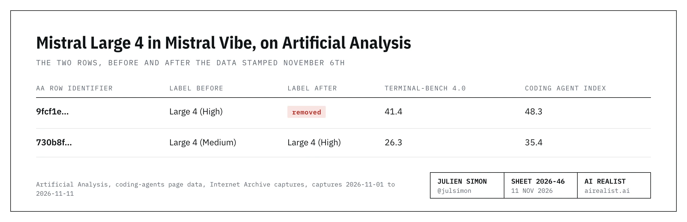
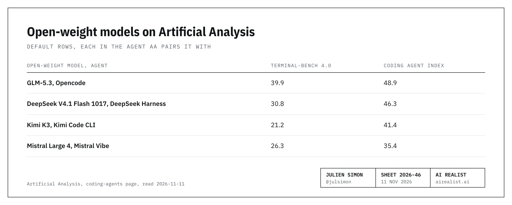
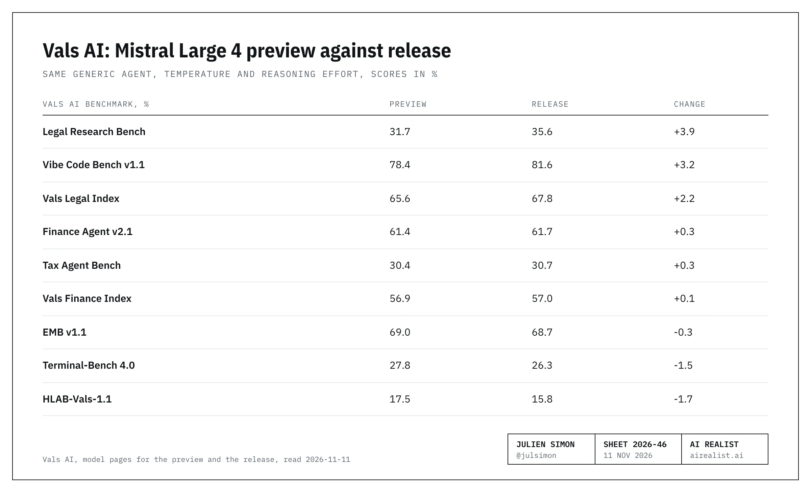

Yes, I'm writing about Mistral again, but it's their fault! At least I'm not writing about Jensen's… shenanigans.
While preparing for a keynote, I reviewed benchmarks and went to Artificial Analysis (AA) to copy a number I had published ten days earlier: 41, the Terminal-Bench 4.0 score of Mistral Large 4 inside Mistral Vibe, Mistral's own coding agent. A very strong number. AA's page now shows 26.
I checked the tab. I checked the model name. I checked my own piece. Then I checked the Internet Archive.
The 41 was the headline of Mistral's open-weight release on October 29th, 2026: "On Terminal-Bench 4.0, Mistral Large 4 improved by 13 percentage points to 41% compared to its public preview, taking the lead among open-weight models".[1] AA published that run the same day, and I saw the 41% on AA's page on October 31st.[2] On November 6th, the run disappeared from that page.[3] Mistral has not changed a number since.
This does not look like dishonesty. It looks like a mess.
What changed on Artificial Analysis's page?
AA's page carries its own data, and each agent row in it has an identifier that stayed the same in every archived copy I read. In the data stamped November 5th, there are two rows for Large 4 in Vibe. In the next archived data, stamped November 6th, there is one.[3][4]

The row AA now calls High is the row it called Medium the day before. It has the same identifier, the same three benchmark scores, the same token counts, and the same Vibe version. No new run appears in the data. One row was deleted, and the other was promoted.[4]
Is this a new Coding Agent Index version?
No, and I checked, because that would have been the boring explanation. I compared seven archived copies of the page, from November 1st to November 11th. In the data where the 41 disappeared, the index went from 34 rows to 33, and only the two Mistral rows changed.[3] The index is version 2.0 across all seven copies, with the same Terminal-Bench task set and grader configuration.[5]
The reward-hacking audit does not explain it either. On Terminal-Bench, AA audits every passing attempt for reward hacking, which is passing a task without doing the work. On the removed run, the audit flagged 3 of 85 passing attempts, and the 41 already counted them as failures.[4]
AA has not said why it removed the run. Its changelog has no entry for the change, and neither its page nor its methodology carries a note.[6] A benchmarker that deletes a published run, relabels another, and leaves its October 29th launch thread on X still quoting the deleted run's 48[2] owes its readers one line. AA wrote none.
Which Mistral Vibe run is High?
The data does say how hard each run worked. The removed run was tagged High effort and used 293,637 output tokens per Terminal-Bench attempt. The survivor, tagged Medium until the relabel, used 193,504, a third fewer.[4] AA's own thread says Large 4 at High used 8.5 million tokens per task. The row AA now calls High uses 5.8 million.[2] A label can be wrong; a token count is not a label. The run AA described as High on October 29th is the one it deleted.
Which label is right today? AA's data cannot say. Mistral's own release page can. Its chart of the Coding Agent Index, credited to AA, plots two points for Large 4: Medium at 35 on the index with 5.8 million tokens per task, and High at 48 with 8.5 million.[1] The row AA now calls High, at 35 and 5.8 million, is the one Mistral's page calls Medium.
Mistral has not made the rest easy. On November 5th, a Mistral engineer who works on Vibe wrote on GitHub that the preview "took low, high and max" and that the release "takes low, medium and high". Mistral's documentation says the preview's naming was "none / high", and that "high is unchanged". From October 30th to November 9th, Vibe offered Large 4 a Max level that the API refuses.[7]
Mistral's three documents, one ghost
Mistral's release page still says 41% on Terminal-Bench 4.0 and 48% on the Coding Agent Index, with no update note. Mistral last edited the page on November 5th, the day before the row disappeared.[1] The model card on Hugging Face still says 48%, and its last commit is dated November 2nd. The technical report, added to the repository the same day, prints 41.0% and 48.3% in its code table. Each credits AA for the 41 or the 48.[1][8]
Either Mistral knows its headline number is gone from its source and has said nothing, or it does not know. Neither is a good look. On November 4th, a user asked on Mistral's own Hugging Face page what drives the gap between the 41 in Vibe and AA's 24.7 for the same model in a minimal generic agent. A week later, there's still no reply.[8]
The agent premium and the open-weight lead
In"Mistral Large 4 Weights: The Score Comes With the Harness", I wrote that the 41 was a Vibe number. I measured an agent premium as the score of a large language model in the agent AA pairs with, minus its score in a minimal generic agent. Large 4's was +16 points, and the twelve other models I compared sat between -4 and +7. I also cited 26 as Vibe's score at Medium effort.
On AA's page today, that 26 is labeled High,[3] and the generic agent still gives 25.[9] If the label is right, the premium is under two points. If it is wrong, AA has no High score for Large 4 in Vibe at all. Either way, the outlier that piece was built on is gone, because the row is gone.
So is the lead. Here are the open-weight rows AA shows by default, each paired with the agent AA uses.[10]

With the 41, Large 4 led GLM-5.3's 39.9 on Terminal-Bench 4.0. With the 26, it is third of four there, and fourth of four on the index.[4][10]
So what is the open-weight release better at?
Not coding, as far as any independent board can tell. It is cheaper to run, because it uses fewer tokens.[11]
Vals AI lists the preview and the release in the same generic agent, with the same temperature and reasoning effort: 27.8, then 26.3 on Terminal-Bench 4.0. One caution: Vals showed 22.7 for the preview on October 8th and has since revised it, without a note. Against that first figure, the release gains 3.5 points.[12]
Both versions have nine Vals scores.[12]

The two indexes are built from the other lines. Of the seven individual benchmarks, four are up, and three are down, and on every line the preview's range and the release's range overlap (Vals prints a margin of one standard error). The best case is legal research and app building, three or four points each, with a margin of about three points on each score.[12]
Both boards see efficiency. On Vals's Terminal-Bench run, the release wrote 46% fewer output tokens than the preview and cost $2.73 per test against $5.18.[11] On AA's Intelligence Index, it scores 26 against the preview's 25, with 39% fewer output tokens per task. On AA's knowledge benchmark, its hallucination rate is 28% against 41%.[2] Mistral claims 30% fewer output tokens.[1] For once, its number is the modest one.
Mistral's page also lists gains over the preview that I found on no independent board: a finance spreadsheet benchmark, an agent security benchmark, and a refusal rate for harmful cyber requests. Its technical report marks all three as internal runs.[13] These may all be true. They come from the page that still says 41.
Mistral, get your act together
Open weights are a promise that people can check your work. People did. The score on your release page is not on the page you cite, and for ten days your own agent offered an effort level your own API refuses.
Fix the page, or tell us why your page is right and AA's is wrong. Put a date on it. Say whether the 41 ran at the High your API takes today, and in which Vibe build. Answer the question on your own Hugging Face page. A lab that can ship a model with a trillion parameters can ship one line of errata.
We need an open champion that holds itself to a higher standard than the labs it competes with. Start with your own release page.
Get your act together. Not for me; you don't care what I think. For your potential customers, who are watching and wondering whether to take you seriously. For your competitors, who are laughing because they don't.
Notes
[1] Mistral, "Mistral Large 4 (Le Chonk) is now open weight", raw page read 2026-11-11: the quoted sentence, which continues "while reducing output tokens by 30%"; "On the Artificial Analysis Coding Agent Index, Mistral Large 4 scores 48%"; the chart headed "Artificial Analysis Coding Agent Index - Terminal-Bench 4.0" with bars "ML4 Preview - self reported" 28 and "Mistral Large 4" 41; no update or correction note. The preview bar names no agent; my November 1st piece, note 5, traces its earlier attributions to AA. The page's metadata gives "datePublished" 2026-10-29 12:00 UTC and "dateModified" 2026-11-05 16:40 UTC; the edits after launch, among them a link to the technical report, a pricing block, a header button and reworded partner quotes, left the 41, the 48 and the charts unchanged. A second chart, "Artificial Analysis Coding Agent Index vs. Token Efficiency", plots "Mistral Large 4 - Medium" at 5.8 million tokens and 35, and "Mistral Large 4 - High" at 8.5 million tokens and 48; its caption reads "Coding Agent Index scores and token efficiencies for reasoning levels available on Artificial Analysis".Mistral release postSecond document: Mistral's technical report, Table 3, "Terminal-Bench 4.0 (AA Coding Agent Index)" 41.0% and "AA Coding Agent Index v2 (AA)" 48.3% for Mistral Large 4.technical report
[2] Artificial Analysis on X, 2026-10-29 14:58 UTC, read 2026-11-11, still online with no correction: "Running in Mistral Vibe, Mistral Large 4 (high) ranks second of the current open weights models on the Artificial Analysis Coding Agent Index (48), between GLM-5.3 (max) in Opencode (49) and DeepSeek V4.1 Flash 1017 (max) in DeepSeek Harness (46), while using about half as many total tokens per task (8.5M vs. 15.9M and 16.7M)".AA thread, Coding Agent Index postThe thread's first post: "With high reasoning, Mistral Large 4 scores 26 on the Artificial Analysis Intelligence Index v5, up 1 point from Mistral Large 4 Preview (25)"; "82K output tokens per Intelligence Index task, 39% fewer than Preview (135K)"; "a 28% hallucination rate on the updated AA-Omniscience v1.1, down from 41% for Preview".AA thread, first postThe thread does not state the 41. AA's page data: the removed record's mean total tokens per task is 8,453,863 and the survivor's is 5,758,752 (note 4). The two Vibe rows are absent from the page capture of 2026-10-29 14:24 UTC and present in data stamped 2026-10-29 14:30 UTC, two and a half hours after Mistral's post. I read the 41 on AA's page on 2026-10-31 for my November 1st piece (its notes 2 and 4).
[3] Artificial Analysis, Coding Agent Index page, data embedded in the page, read from Internet Archive captures on 2026-11-11 and from the live page the same day. Thecapture of 2026-11-06 01:10 UTCcarries data stamped 2026-11-05 23:19 UTC, with 34 rows, among them "Mistral Vibe - Mistral Large 4 (High)". Thecapture of 2026-11-07 01:04 UTCcarries data stamped 2026-11-06 07:49 UTC, with 33 rows and no such record. The stamp is the data's audit timestamp. The removal went live between the two captures. Second document: an independent tracker of AA's data flagged the missing row from 2026-11-06, recorded the removal and the renaming on 2026-11-09 (pull request text read through the GitHub API on 2026-11-11), and wrote "No public changelog explains the removal."tracker pull request 592
[4] Same captures as note 3. Record 9fcf1e000a8ac75cca614977bcac25da, "Mistral Vibe - Mistral Large 4 (High)": Terminal-Bench 4.0 mean reward 0.4141 over 198 attempts, 85 passing attempts reviewed, 3 flagged; index score 0.4828; 293,637 mean output tokens per Terminal-Bench attempt. Record 730b8ffd93e83875305984c999467c69, labeled "(Medium)" in the 2026-11-06 01:10 UTC capture and "(High)" from the 2026-11-07 capture: Terminal-Bench 4.0 mean reward 0.2626 over 198 attempts, 53 passing, 1 flagged; index score 0.3541; agent version 3.0.0-v14; 193,504 mean output tokens per Terminal-Bench attempt, 34% fewer, unchanged across the renaming. The 41 counts the flagged attempts as failures: 82 of 198 attempts is 41.4%. Effort field: record 9fcf1e "high", level 40; record 730b8f "medium", level 30, then "high", level 40 from the 2026-11-07 capture. The field first appears in thecapture of 2026-11-03 19:34 UTC. Across the index: mean cost $1.26 against $0.78 per task. One counter that AA does not document, snapshotMismatchAttemptCount, is non-zero on the removed record and on four surviving rows. AA's rule on flagged attempts: "Terminal-Bench scores these attempts zero under its leaderboard integrity update, and we apply the same rule."AA Coding Agent Index methodology
[5] Seven Internet Archive captures of the same page, read 2026-11-11: 2026-11-01, 11-03, 11-05, 11-06, 11-07, 11-09 and 11-11, each near 01:00 UTC. Compared for every row: label, default flag, index score, the three benchmark scores, attempt counts, token counts, and agent versions. Between the11-06 captureand the11-07 capture, only the two records in note 4 differ. All seven carry "Coding Agent Index v2.0", the same Terminal-Bench dataset hash (sha256 beginning 39d9f44b), and the same two grader configurations. An ordinary update looks different: between 11-09 and 11-11, AA added two Muse Ember rows, moved one Codex row's index score by a tenth of a point and changed a default flag, with no deletion.capture of 2026-11-01capture of 2026-11-11
[6] Artificial Analysis changelog, read in a browser on 2026-11-11 with all entries loaded back to 2026-10-01: no entry names the Coding Agent Index row, Mistral Vibe, or a relabeling; its Mistral entries of 2026-10-29 and 2026-11-05 list language-model results and provider performance.AA changelogThe live index page, read raw the same day, carries no caveat on any of its 35 rows, and the methodology page does not mention Vibe.AA Coding Agent Index methodologyAA's posts on X since 2026-10-30, searched 2026-11-11, mention no correction.
[7] Mistral Vibe repository, issue 1439, "bug: Mistral Large 4 is offeredmaxand notmedium, but the API takes low, medium and high", opened 2026-11-05 13:08 UTC, read through the GitHub API on 2026-11-11. Reply of 2026-11-05 14:37 UTC by a contributor whose GitHub profile reads "Working on Vibe CLI at @mistralai": "on 2026-10-29, mistral-large-4 and mistral-large-4-0 moved to the open-weight Mistral Large 4, which takes low, medium and high. The earlier preview took low, high and max, which is what our built-in model table still lists."issue 1439Mistral documentation, reasoning page, read 2026-11-11: "Migrating from Mistral Large 4 Preview's previous none / high naming? Use low for the level previously called none. high is unchanged."Mistral reasoning documentationVibe release notes: v3.1.0, 2026-11-04, "its thinking picker offers Low, High and Max when its config lists no levels"; v3.1.1, 2026-11-09, "Mistral Large 4's thinking picker offers Low, Medium and High, the levels the API now takes, instead of Low, High and Max".Vibe v3.1.1 release notesVibe's built-in model table (known_models.py, read at each release tag) gives Large 4 the levels high and off in v3.0.3, then low, high and max from v3.0.4, 2026-10-30, to v3.1.1, 2026-11-09: ten days. The API's refusal of max was measured by the issue's author on 2026-11-05; the engineer dates the change to 2026-10-29. A comment in the v3.0.4 source, published the day after that, reads "The Mistral API takes only the efforts low, high and max for Mistral Large 4". AA's data records Vibe version 3.0.0-v14 for both runs; v3.0.3, 2026-10-26, says "Thinking levels are sent to the model as picked (maxasmax,highashigh), never silently changed".
[8] Hugging Face commit history ofmistralai/Mistral-Large-4-1T-A52B, read 2026-11-11: last commit "Update technical report (#14)", 2026-11-02 18:30 UTC; earlier the same day, "technical-report (#12)", 15:50 UTC.commit historyThe model card, read 2026-11-11: "On the Artificial Analysis Coding Agent Index, ML4 scores 48%, effectively tied with the leading open-weight model, GLM-5.3".model cardThe repository page also displays an evaluation result of 41 for Terminal-Bench 4.0, sourced to the release announcement; it comes from pull request 7, opened by another user on 2026-10-30 and not merged, so it is not in the count of three documents. Discussion 17 on the same repository, "Terminal-Bench 4.0: 41% in Vibe, 24.7% in mini-swe-agent. What drives the gap?", opened 2026-11-04 19:50 UTC, read through the Hugging Face API on 2026-11-11: open, one comment, the author's own.discussion 17
[9] Artificial Analysis, Terminal-Bench 4.0 evaluation page, read in a browser on 2026-11-11: Mistral Large 4 (high) 24.7% in the mini-swe-agent harness, rounded to 25, the same figure as on 2026-11-01; GLM-5.3 (max) 41.9%.AA Terminal-Bench 4.0 pageThe premium is AA's 26.26 in Vibe (note 4) minus AA's 24.75 in the generic agent, or 1.5 points. Second document for the generic agent: Vals AI, model page for the release, 26.26% plus or minus 5.13 in the same harness.Vals, Large 4 OSS
[10] Artificial Analysis, Coding Agent Index page data,capture of 2026-11-11 01:02 UTC, data stamped 2026-11-10 18:14 UTC, and the live page the same day: the default rows for open-weight models. Opencode is a third-party agent. Muse Spark Open and Beam 1.0 are not default rows. The same data lists DeepSeek V4.1 Flash in Codex at 47.3, a non-default row. Second document: Mistral's technical report, Table 3, which prints 48.9%, 46.3% and 41.4% on the index for the same three peers.technical report
[11] Vals AI, Terminal-Bench 4.0 page, raw page source read 2026-11-11: output tokens 19,160,685 for the preview and 10,423,768 for the release, 46% fewer; cost per test $5.18 and $2.73.Vals Terminal-Bench 4.0
[12] Vals AI, model pages for the preview and the release, raw page source read 2026-11-11: both at temperature 1, top P 0.95, high reasoning effort; Vals'sTerminal-Bench pagelists both under Mini-SWE-agent and says "Error bars show ±1 standard error". Scores to two decimals, preview then release: Legal Research Bench 31.73 (plus or minus 3.23) and 35.58 (3.33); Vibe Code Bench v1.1 78.40 (3.55) and 81.56 (3.29); Vals Legal Index 65.61 (1.63) and 67.84 (1.70); Finance Agent v2.1 61.38 (2.02) and 61.72 (2.05); Tax Agent Bench 30.39 (3.31) and 30.67 (3.30); Vals Finance Index 56.90 (1.42) and 56.98 (1.44); EMB v1.1 68.97 (2.34) and 68.67 (2.43); Terminal-Bench 4.0 27.78 (1.82) and 26.26 (5.13); HLAB-Vals-1.1 17.50 (3.22) and 15.83 (3.13). Changes are computed on the two-decimal scores. The preview page lists ten more benchmarks with no release score.Vals, preview entryVals, Large 4 OSSThe preview's earlier score: 22.73 plus or minus 0.88 in thecapture of 2026-10-08; 26.26 minus 22.73 is 3.5. The Finance Index combines Finance Agent, EMB and Tax Agent Bench; the Legal Index combines Legal Research Bench, HLAB and Tax Agent Bench.Vals Finance IndexVals Legal Index
[13] Mistral, "Mistral Large 4 (Le Chonk) is now open weight", raw page text read 2026-11-11: "This is reflected in our Finch scores climbing to 73.3%", with the chart "FinWorkBench (Finch)" giving 67.4 for the preview; "Mistral Large 4 resisting 97.1% of attacks vs 93.3% in Preview" on the B3 Agent Security Benchmark; the chart "Refusal of harmful cyber requests", 95 for the preview and 97 for the release; the quoted sentence on reinforcement learning.Mistral release postThe technical report prints "Finch (internal)" and lists B3 and the cyber refusal figures under "Safety evaluations run internally". Neither Finch nor B3 appears on Vals AI's benchmark list and model pages or on AA's evaluations list and model pages, searched 2026-11-11.technical report